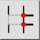

Manual Keluar
Bilah Alat / Ikon:


Menu: Memodifikasi > Manual Keluar
Pintasan: B, 2
Perintah: brk | b2
Deskripsi
Membagi objek dengan memotong keluar segmen di antara dua titik yang ditentukan pengguna.
Penggunaan
- Pilih entitas yang ingin Anda pecah.
- Klik titik pertama di mana entitas akan dibagi.
- Jika titik tidak terletak pada entitas, titik pemisah diasumsikan sebagai titik terdekat pada entitas.
- Klik titik kedua di mana entitas akan dibagi.
- Segmen antara dua titik dihapus jika opsi "Remove Segment" pada bilah alat opsi aktif. Jika tidak, entitas hanya dipisahkan pada titik-titik yang diberikan.